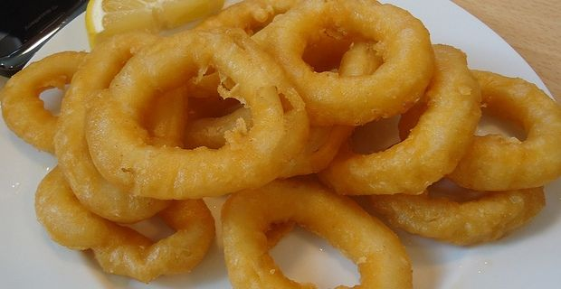

Inktvisringen
Deze ringen kan prima bij een hoofdmaaltijd, maar is ook een makkelijk te bereiden wat erg mooi is.
Ingredienten
- 400 gr. inktvisringen
- 1 ei
- 2 eetlepels melk
- 1 kilo inktvisringen
- 200 gram paneermeel
- plantaardige olie om te frituren
- Partje citroen voor garnering
Bereidingswijze
- Klop het ei los met de melk.
- Haal de intvisringen door het eiermengsel en laat ze uitdruipen.
- Wentel ze in het paneermeel en druk het stevig aan.
- Frituur de inktvisringen in porties goudbruin in de hete olie.
- Schep de ringen met de schuimspaan uit de pan en laat ze goed uitlekken op keukenpapier.

Tip Serveer ze met partjes citroen.